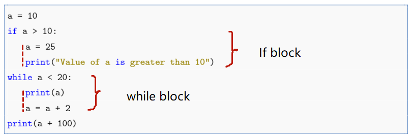

6. Define functions#
Python Functions is a block of statements that return the specific task. It is very import in coding since we can define a function to achive personalized needs.
When writing functions in Python, the frequently used statements are conditional statements if, and loop statements such as for or while.
Before we introduce how to self define functions, let us learn some useful buit-in functions of Python.
6.1. Some built-in functions#
Some commonly used built-in functions are:
Function |
Description |
|---|---|
sum |
Calculates the sum of an iterable (e.g., sequence, set) |
max |
Returns the maximum value in an iterable |
min |
Returns the minimum value in an iterable |
abs |
Returns the absolute value of a number |
round |
Rounds a number to the nearest integer (or specified decimal places) |
range |
Generates a sequence of integers, commonly used in |
sorted |
Sorts an iterable in ascending order by default |
round(3.1415926, 2) # round to a float with 2 decimals
3.14
round(3.1415926) # round to an integer
3
In Python, range is directly treated as an iterable data type representing a sequence of integers. It includes the end value (required, exclusive), start value (optional, inclusive), and step size (optional). You can convert a range object into a list using list().
range(10) # an integer sequence from 0 to 9, step size is 1 by default
range(0, 10)
list(range(10)) # convert the range to a list
[0, 1, 2, 3, 4, 5, 6, 7, 8, 9]
range(2, 10) # an integer sequence from 2 to 10
range(2, 10)
list(range(2, 10, 2)) # an integer list from 2 to 10, step size 2
[2, 4, 6, 8]
range is frequently used in the for-loop statement.
for i in range(10):
print(i, end=' ')
0 1 2 3 4 5 6 7 8 9
Another helpful function in the for-loop statement is eumerate(), in which its argument is an iterable and can return an enumerate object that has a counter for each element.
a = [20, 30, 40, 50]
for item, i in enumerate(a):
print(item, i)
0 20
1 30
2 40
3 50
The sorted() function sorts an iterable object, with ascending order as the default.
arr = [23, 54, 12, 37]
sorted(arr)
[12, 23, 37, 54]
sorted(arr, reverse=True) # change the 'reverse' argument to sort in descending order
[54, 37, 23, 12]
6.2. if statement#
The syntax for the if statement is:
| if condition1: |
| statement_block_1 |
| elif condition2: |
| statement_block_2 |
| else: |
| statement_block_3 |
The if block first checks “Condition 1”—if true, runs “statement_block_1”; otherwise, it evaluates “Condition 2”. When “Condition 2” holds, “statement_block_2” runs; if neither condition is met, “statement_block_3” executes.
For example:
wage = 5000
if wage <= 2000:
print("poor")
elif wage <= 4000:
print("middle")
else:
print("rich")
rich
There can be other if statement inside one if statement. For example:
wage = 1000
if wage <= 2000:
print("poor")
if wage < 1000:
print("very poor")
if wage <= 500:
print("super poor")
else:
print("not poor")
poor
Note
There can be no elif block or else block inside the if block.
Unlike many other programming languages, Python uses
indentationto define code blocks instead of semicolons ; or curly braces {}.indentationaffects the scope of commands inside a block.

a = 10
if a > 10:
a = 25
print("Value of a is greater than 10") # this line is not implemented
while a < 20:
print(a)
a = a + 2
print(a + 100)
10
12
14
16
18
120
In the above code, the if block has consistent indentation, and the while block also maintains uniform indentation. This formatting enhances program readability and clearly defines the scope of different commands.
The statement
print("Value of a is greater than 10")aligns witha = 25, meaning both belong to the if block and execute only when the if condition is met.If
print("Value of a is greater than 10")were aligned witha = 10instead, it would no longer be part of the if block—instead, it would execute outside the if statement, regardless of the condition.
a = 10
if a > 10:
a = 25
print("Value of a is greater than 10") # this line is out of the if block and thus not affected by the if block
while a < 20:
print(a)
a = a + 2
print(a + 100)
Value of a is greater than 10
10
12
14
16
18
120
6.3. Loop statement#
There are two loop statements: for and while.
6.3.1. for loop#
A for loop can iterate over iterable objects, such as lists, tuples, sets, dictionaries, or strings.
The syntax of a for loop is as follows:
| for variable in iterable: |
| statements |
The purpose of a for loop is to iterate through all elements in a iterable object and execute one or more statements.
For example:
for i in range(3):
print(i)
0
1
2
The above codes print every element in the range(3).
If the variable in the for loop is not used in the statements, we can replace the variable with _.
for _ in range(3):
print("Hello, World!")
Hello, World!
Hello, World!
Hello, World!
6.3.2. while loop#
They syntax for while loop is:
| while condition: |
| statements |
In the while loop, if the condition is met, the commands within the while loop will continue to execute indefinitely.
For example:
a = 1
while a < 4:
print(a)
a = a + 1
1
2
3
In the above codes: if a is less than 4, print a and add a by 1; repeat this process until a equals 4.
The for loop and while loop are often used in combination with the break or continue statements. The break statement exits the loop entirely, while the continue statement skips the remaining code in the current iteration and proceeds to the next cycle.
for i in range(3):
if i == 1:
break
print(i)
print("loop is over")
0
loop is over
In the above codes, the break statement makes the program jump out the for loop when i equals 1.
If replacing break with continue:
for i in range(3):
if i == 1:
continue
print(i)
print("loop is over")
0
2
loop is over
In the above codes, when i equals 1, the continue statement skips the current iteration and proceeds with the remaining loops.
Examples about break and continue in the while loop:
a = 1
while a < 5:
a = a + 1
if a == 3:
break
print(a)
print("loop is over")
2
loop is over
a = 1
while a < 5:
a = a + 1
if a == 3:
continue
print(a)
print("loop is over")
2
4
5
loop is over
Note
Both for loops and while loops can be followed by an else statement. The else block executes only if the loop completes normally (i.e., without encountering a break).
6.4. Self-defined functions#
Python uses the keyword def to define a function. They syntax is:
| def function_name(parameters): |
| statements |
The following codes define a summation function.
def add(x1, x2):
z = x1 + x2
return z
There are severy features for a self-defined function in Python.
Feature |
Description |
|---|---|
|
A self-defined function starts with keyword |
|
Function parameters are inside the parentheses |
|
A colon after the right parenthesis of the parameters |
|
The return values of the fuction follows after the keyword |
A Python function can return one or multiple values, or no return values. The following code returns multiple values—both the sum of the two arguments and the original arguments themselves.
def add(x1, x2):
z = x1 + x2
return z, x1, x2
When calling a function, specify the function name and pass in the required arguments, for example:
Argumentsare the actual values passed to the function when it is called. They replace theparametersduring execution.
def add(x1, x2):
z = x1 + x2
return z
x1 = 10
x2 = 6
print(add(x1, x2))
16
If you don’t need to use a particular return value, you can assign it to an underscore _ as a convention to indicate unused variables.
def add(x1, x2):
z = x1 + x2
return z, x1, x2
x1 = 10
x2 = 6
sums, _, b = add(x1, x2) # use _ to represent the second value
print(sums)
print(b)
16
6
In the code above, an underscore _ is used to ignore the second return value, while the other return values are assigned to new variables.
A function can also be defined without input parameters, meaning the parentheses can be left empty. For example, the following code prints the message ``Hello, world!’’.
def hello():
print("Hello, world!")
hello()
Hello, world!
You can use triple quote ''' ''' or triple quotes """ """ to add function documentation (docstring). For example:
def hello():
"""This is a hello function."""
print("Hello, world!")
hello()
Hello, world!
In some Python IDEs like Spyder or PyCharm, hovering the mouse over a function or class name will automatically display its documentation (docstring), significantly improving code readability.
6.4.1. Parameter Passing Types in Functions#
Function parameters in Python are categorized by mutability into two groups:
• Immutable objects: numeric, strings, tuples
• Mutable objects: lists, dicts, sets
Argumentsare the actual values passed to the function when it is called. They replace theparametersduring execution.
For immutable types, the original value of the parameter remains unchanged after being passed to a function. For example:
def changeNum(a): # this parameter a is valid only inside the scope of the function
a = 10
a = 2 # this variable is outside the scope of the function
changeNum(a)
print(a) # the value a is still 2
2
In the above code, since a numeric type is passed, the original value of the parameter remains unchanged after the function call. The same behavior applies to string and tuple types when passed as arguments.
Note
For the parameters in a function, if they are immutable objects, they are local variables and only valid inside the function body. So they are different with the same-name variables outside the function defintion block.
We can use the keyword global to declare a variable inside a function refer to a variable in the global (module-level) scope rather than creating a local variable.
The global variable can not be the parameter of a function.
def changeNum():
global a # declare a global variable
a = 10
a = 2 # this variable is outside the scope of the function
changeNum()
print(a) # the value a is changed
10
When mutable objects (e.g., lists, dictionaries) are passed to a function, their original values can be altered if modified inside the function. This happens because Python passes them by object reference. For example:
def changeList(mylist):
mylist.extend([1, 2, 3])
return mylist
listTry = [10, 20, 30]
changeList(listTry)
print(listTry)
[10, 20, 30, 1, 2, 3]
6.4.2. Parameter passing techniques in functions#
There are four main methods for passing function parameters:
Positional arguments
Assignment by keyword arguments
Default parameter values
Variable-length arguments
For positional arguments, the function parameters are assigned values in a one-to-one correspondence with the input order.
def minus(x1, x2):
z = x1 - x2
return z
print(minus(10, 6))
4
In the code above, when calling the minus function, the parameters are assigned in order, meaning \(x_1\) is set to 10 and \(x_2\) is set to 6.
Keyword argument passing means that when calling a function, you can directly assign values to parameters by name. Python automatically matches the values to parameters based on the names specified in parentheses. For example:
def minus(x1, x2):
z = x1 - x2
return z
print(minus(x2=10, x1=6))
-4
In the above code, when calling the minus function, the parameters are explicitly assigned within the parentheses, resulting in \(x_2\) being set to 10 and \(x_1\) to 6.
In Python, when defining a function, you can set default values for parameters. When calling the function, if no value is provided for a parameter, the default value will be used. For example:
def minus(x1, x2=6):
z = x1 - x2
return z
print(minus(x1=10)) # x2 use the default value 6
print(minus(x1=10, x2=5)) # x2 use the value 5 since a value for x2 is provided when calling the function
4
5
When a function receives multiple arguments, but you’re not exactly sure how many, you can use *args to represent multiple arguments, in which *args can be seen as the name of a list. For example:
def plus(x, *a):
print("x is %d" % x)
for var in a:
x += var
print("final x is %d" % x)
plus(3, 4, 5) # *a is [4, 5]
plus(3, 4, 5, 6) # *a is [4, 5, 6]
x is 3
final x is 12
x is 3
final x is 18
You can use **args to pass a variable number of keyword (name-value) arguments. For example:
def minus(x1, **a):
sum = 0
for key in a:
sum += a[key]
return x1 - sum
print(minus(10, x2=3, x3=5))
7
In the above codes, **args represents x2 = 3, x3 = 5.
6.5. Debugging#
Debugging a program is an unavoidable step in programming. The purpose of debugging is to help identify and fix errors in the program. Even the best programmers can’t write a completely error-free program on the first try. Python provides several common methods for debugging programs.
6.5.1. Debug using print()#
This method typically involves placing print() statements before lines of code that are suspected to contain errors, in order to print out certain variable values or function outputs. This helps the programmer determine where the error is occurring. This debugging method is suitable for situations where the code is short, the problem is simple, and only a few variables need to be checked.
For example, the following codes have a print() line to ouput the values of a and b to check the possible erros.
def divide(a, b):
print(f"DEBUG: a={a}, b={b}") # check the value of a and b
return a / b
print(divide(10, 2))
print(divide(5, 0)) # there is somthing wrong here
The drawbacks of this method is: the print() positions need to be manually modified each time.
6.5.2. Debug using a dubugger#
Python comes with a built-in debugger called pdb. Additionally, other Python IDEs such as Spyder, PyCharm, and VS Code provide dedicated debugging features in their menu or toolbar.
The general steps for debugging with a debugger are:
Set a breakpoint before the suspected problematic code line
In IDEs: Click next to the line number (a red dot will appear)
In pdb: Add the line
pdb.set_trace()
Use debugging tools to identify or fix errors
Exit debugging mode
The following codes are an example using pdb to debug:
Before using
pdb, first import the pdb library byimport pdb.
import pdb # import the pdb library
def divide(a, b):
pdb.set_trace() # the line for pdb debugging
return a / b
print(divide(10, 2))
After running the code, a pdb command-line interface will appear, allowing you to enter debugging commands for troubleshooting.
Some commands for pdb:
Command |
Function |
|---|---|
n (next) |
Execute current line (without entering functions) |
s (step) |
Step into function calls |
r (return) |
Run until current function returns |
p var |
Print variable value |
c (continue) |
Continue execution until next breakpoint |
q |
Quit debugging |
6.5.3. Step Into, Step Over, Step Out, Resume Program#
When using an IDE for debugging, Step Into, Step Over, Step Out, and Resume Program are common debugger functions, and their differences are as follows:
Step Into
Executes code line-by-line. If the current line contains a function call, it enters that function.Equivalent to
sin pdb
Step OverExecutes the current line’s code. If the line contains a function call, it runs the entire function without stepping inside, then pauses at the next line.Equivalent to
nin pdb
Step Out
When inside a function: Completes the remaining code of the current function and returns to its caller.
Outside functions: Continues execution until the next breakpoint or program end.Equivalent to
rin pdb
Resume ProgramContinues program execution until the next breakpoint or program termination.Equivalent to
cin pdb
def add(a, b):
return a + b
def main():
x = 10
y = 20
result = add(x, y) # if using "Step Into" when debugging, the dubgugger will enter the first line of the "add" function
print(result)
main()
30
def add(a, b):
return a + b
def main():
x = 10
y = 20
result = add(x, y) # if using "Step Over" here, the dubugger will execute the "add" function and go to the next line in the current block
print(result)
main()
30
import pdb
def add(a, b):
pass # If using "Step Out" here, the dubugger will execute the "add" function and return to its caller
return a + b
def main():
x = 10
y = 20
result = add(x, y) # Execution will pause here after stepping out
print(result)
main()
30
Python has a keyword called
pass, which performs no operation. It is typically used as a placeholder statement and can be helpful during program debugging.
In some debuggers (such as PyCharm), Step Into My Code is an enhanced version of Step Into that serves the following purposes:
Steps into your own written code while skipping Python built-in libraries and third-party library code.
Avoids entering external libraries (like numpy, pandas, etc.), focusing only on debugging your own code to improve debugging efficiency.
Note
The debugging fucionts in some Python IDEs may be a little different with the above descriptions, but are generally quite similar.
6.5.4. Debug using try-except statements#
When writing programs, sometimes you’re unsure whether the code will run correctly and want to test how it executes. In such cases, you can use a try-except statement: if the code in the try block fails to execute successfully, the program will then run the code in the except block.
| try: |
| statements |
| except SomeError: |
| statements |
For example:
def devide(x1, x2):
try:
z = x1 / x2
print(z)
except ZeroDivisionError: # ZeroDivisionError is an error when trying to dividing a number by zero
print("x2 should not be zero")
devide(5, 0)
x2 should not be zero
In the above code, if x1 can be divided by x2, output the quotient; otherwise, output a notice.
Common exception types include:
Exception Type |
Description |
|---|---|
AttributeError |
Raised when accessing a non-existent attribute or method of an object. |
IndexError |
Occurs when trying to access an index outside the valid range of a sequence. |
SyntaxError |
Caused by incorrect Python syntax (e.g., missing colons or parentheses). |
NameError |
Raised when referencing an undefined variable or function. |
TypeError |
Occurs when a function receives an argument of an inappropriate type. |
ModuleNotFoundError |
Triggered when attempting to import a module that does not exist or cannot be found. |
ValueError |
Raised when a function argument has the correct type but an invalid value. |
6.6. lambda, map, filter, reduce#
Python uses lambda, map, filter or reduce to create anonymous functions. The term “anonymous” means these functions are not defined using the standard def statement.
Key Features:
Single-line only: Lambda functions are restricted to one expression.
Syntax: Separates input arguments and the return value with a colon (
:).
The syntax for lambda anonymous function is:
| function_name = lambda parameters: return statements |
For example:
add = lambda x1, x2: x1 + x2
print(add(10, 6))
16
In the above codes, “add” is the function name, the parameters are x1, x2 and the return value is x1 + x2.
We can also use the if-else statement in the lambda function.
Max = lambda a, b: a if a > b else b
print(Max(12, 20))
20
The map(fun, iter) function applies the function “fun” to each element in an iterable object and returns a map-type iterable object.
Key Features:
Applies a function to every item in an iterable (e.g., list, tuple).
Returns a map object (an iterator), which can be converted to a list, tuple, etc.
fun` can be:
A
lambdaanonymous function(for simple operations).A
defcustom function (for complex logic).
a = [1, 2, 3]
b = map(lambda x: x**2, a) # 对 a 中每个元素平方
b
<map at 0x1042d5180>
We can use `list()`` function to convert the map-type iteratble object to the type list.
list(b)
[1, 4, 9]
The filter(fun, iter) function applies a filtering function “fun” to each element in the iterable iter and returns a filter-type iterable object containing only the elements that meet the condition.
a = [1, 2, 3]
b = filter(lambda x: x >= 2, a) # filter the elements which are greater equal than 2
list(b)
[2, 3]
The reduce(fun, iter) function applies a function “fun” cumulatively to items in an iterable object, reducing them to a single value. It first applies the function to the first two elements in the iterable iter, then uses the result as the first input for fun when processing the third element, and so on.
from functools import reduce # import reduce from the library functools
a = [1, 2, 3, 4]
b = reduce(lambda x1, x2: x1 + x2, a)
b
10
The reduce function can also accept three parameters, in the form of reduce(fun, iter, start=None). In this case:
It first applies the function fun to the initial value start and the first element of the iterable iter.
Then uses the result as the first input for fun when processing the second element.
This process continues sequentially through all elements and finally returns a single accumulated value.
a = [1, 2, 3, 4]
b = reduce(lambda x1, x2: x1 + x2, a, 10) # initial value is 10
b
20
6.7. Import other modules* [1]#
In Python programming, every file with a .py extension is called a module. Often, we need to import functions from other modules just like we import some libraries.
6.7.1. Where Python find modules#
The search order for Python modules is as follows:
Current directory (the folder where the script is located).
Directories in
sys.path:Paths specified in the
PYTHONPATHenvironment variable.Standard library paths in the Python installation directory (for built-in libraries).
The
site-packagesdirectory (for installed third-party libraries).
We can check the directories by the following code using sys.path:
import sys
print(sys.path)
['/Users/yourname/projects', '/Users/zhenchen/Documents/book-python-data-science-en/data-science', '/opt/anaconda3/lib/python313.zip', '/opt/anaconda3/lib/python3.13', '/opt/anaconda3/lib/python3.13/lib-dynload', '', '/opt/anaconda3/lib/python3.13/site-packages', '/opt/anaconda3/lib/python3.13/site-packages/aeosa']
6.7.2. Import a sibling module#
If the imported module is a sibling file of the current module—meaning they share the same parent directory—for example:
Directory structure
project_root/
│── main.py
│── my_module.py
We can directly import the sibiling module:
import my_module
If we just want to import some function or class named “foo” in the sibling module, we can use from-import statement.
from my_module import foo
6.7.3. Import a nephew/niece module#
If the module to be imported is in a folder at the same level as the current module, for example:
Directory structure
project_root/
│── main.py
│── folder1/
│ │── my_module.py
We can import “my_module.py” in the folder “folder1” by the following code.
from folder1 import my_module
If we just want to import the function/class “foo” from “my_module.py”:
from folder1.my_module import foo
6.7.4. Import a aucle/aunt, cousin module#
If the imported module is the sample level with the parent folder:
Director structure1
project_root/
│── my_module.py
│── folder1/
│ │── main.py
Or if the import module is in the folder which has same level with the parent folder:
Directory structure2
project_root/
│── folder2
│ │── my_module.py
│── folder1/
│ │── main.py
We want to import “my_module.py” in the module “main.py”.
First, we insert the parent directory to
sys.path.
import sys
import os
# get the path of the parent directory
parent_dir = os.path.abspath(os.path.join(os.getcwd(), "..")) # .. represents the parent directory
sys.path.insert(0, parent_dir) # insert the parent directory to sys.path
Then we can import the my_module accorderingly:
If the imported module is aucle/aunt：
import my_module.If the imported module is cousin:
from folder2 import my_module.
Note
PyCharm automatically adds the root directory of the entire project folder to sys.path. Therefore, in PyCharm, you can directly import modules based on the folder structure without manually adding the parent directory path via sys.path.
For example，for the directory structure2, we can directly import “my_module” by the following code:
from folder2 import my_module
6.7.5. Import using sys.path.append()#
If the path to your module is complex, you can use methods like sys.path.append() to add the specific path of the module you want to import.
For example, if you want to import “other_folder/my_module.py”, where other_folder is the full absolute path on your computer’s hard drive, you can do this:
import sys
import os
sys.path.append(os.path.abspath("other_folder")) # add the path of "other_foler" to sys.path
import my_module
6.8. Exercises#
Exercise 6.1
Which function will you use to find the absolute value of a number in Python?
A. fabs()
B. absolute()
C. abs()
D. all()
Solution to Exercise 6.1
C
Exercise 6.2
What is the output of the following code?
x = 'awesome'
def fun():
x = 'fantastic'
fun()
print('Python is ' + x)
A. Python is x
B. Python is fun
C. Python is fantasic
D. Python is awesome
Solution to Exercise 6.2
D
Exercise 6.3
What is the output of the following code?
x = 'awesome'
def fun():
global x
x = 'fantastic'
fun()
print('Python is ' + x)
A. Python is x
B. Python is fun
C. Python is fantasic
D. Python is awesome
Solution to Exercise 6.3
C
Exercise 6.4
What is the output of the following code?
y = 5
foo = lambda x : x * y
print((foo(6))
A. 5
B. 6
C. 11
D. 30
Solution to Exercise 6.4
D
Exercise 6.5
What statement is to skip the current iteration and proceed with the remaining loops?
A. break
B. continue
C. end
D. return
Solution to Exercise 6.5
B
Exercise 6.6
Lambda functions can take multiple arguments.
A. True
B. False
Solution to Exercise 6.6
A
Exercise 6.7
For the following code:
x = 300
def myfunc():
x = 200
myfunc()
print(x)
What will be the printed result?
A. 300
B. 200
C. 100
D. 0
Solution to Exercise 6.7
A
Exercise 6.8
For the following code:
x = 300
def myfunc():
global x
x = 200
myfunc()
print(x)
What will be the printed result?
A. 300
B. 200
C. 100
D. 0
Solution to Exercise 6.8
B
Exercise 6.9
What is the output of the following codes:
count = 0
while count < 3:
print("Hello")
count += 1
else:
print("Else block")
A. Prints “Hello” three times and then prints “Else block”
B. Prints “Hello” three times
C. Prints “Else block” three times
D. Raise an error
Solution to Exercise 6.9
A
Exercise 6.10
Loop and print each element for the following list and break the loop if the item is “banana”.
fruits = ["perch", , "grape", "apple", "banana", "cherry"]
Solution to Exercise 6.10
fruits = ["perch", , "grape", "apple", "banana", "cherry"]
for x in fruits:
if x == "banana":
break
print(x)
Exercise 6.11
Define a function to compute the area of a circle with given radius. (tips: area = \(\pi\)*radius*radius)
Solution to Exercise 6.11
import math
define area_cicle(r):
area = math.pi * r**2
print(f"the area of the circle is {area:.2f}")
r = 10
area_circle(r)
Exercise 6.12
Define a function, with given value of \(n\), it can calculate the sum of the cubes of all natural numbers from 1 to \(n\).
Solution to Exercise 6.12
def sum_cube(n):
sum = 0
for i in range(1, n+1):
sum += i * i *i
return sum
n = 10
print(sum_cube(n))
Exercise 6.13
Define a dict with all the values are numeric and compute the sum of all the values.
Solution to Exercise 6.13
def dict_sum(myDict):
sum = 0
for i in myDict:
sum = sum + myDict[i]
return sum
dict = {'a': 100, 'b':200, 'c':300}
print("Sum :", dict_sum(dict))
Exercise 6.14
Define a function to evaluate whether the input year is leap year or not. (tips: a leap year is a year value that is divisible by 4 but not by 100, or divisible by 400.)
Solution to Exercise 6.14
def evaluate(year):
if (year % 4) == 0:
if (year % 100) == 0:
if (year % 400) == 0:
print("{} is a leap year".format(year))
else:
print("{} is not a leap year".format(year))
else:
print("{} is a leap year".format(year))
else:
print("{} is not a lear year".format(year))
year = 2025
evaluate(year)
Exercise 6.15
Write a Python function that takes a list and returns a new list with distinct elements from the first list.
Sample List : [1,2,3,3,3,3,4,5]
Unique List : [1, 2, 3, 4, 5]
Solution to Exercise 6.15
def unique_list(l):
# Create an empty list 'x' to store unique elements
x = []
# Iterate through each element 'a' in the input list 'l'
for a in l:
# Check if the element 'a' is not already present in the list 'x'
if a not in x:
# If 'a' is not in 'x', add it to the list 'x'
x.append(a)
# Return the list 'x' containing unique elements
return x
# Print the result of calling the 'unique_list' function with a list containing duplicate elements
print(unique_list([1, 2, 3, 3, 3, 3, 4, 5]))